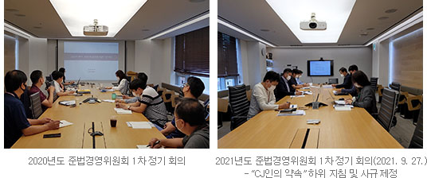
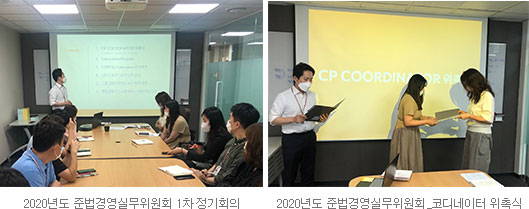

윤리경영
CJ푸드빌은 확고한 의지를 가지고 윤리경영을 실천해 나가고 있습니다.
CJ푸드빌 대표이사 김찬호입니다.
CJ푸드빌 홈페이지를 찾아주신
모든분들께 진심으로 감사드립니다.
CJ푸드빌은 호암 이병철 선대 회장님의 창업이념인 ‘사업보국’, ‘인재제일’, ‘합리추구’ 아래, ‘ONLYONE 제품과 서비스로 최고의 가치를 창출하여 국가 사회에 기여한다’는 CJ경영철학의 미션을 지켜나가고 있습니다.
1997년 국내 토종 브랜드 ‘빕스(VIPS)를 출범해 특급호텔, 전문점 등에서만 경험할 수 있었던 최고급 스테이크를 대중화함으로써 국내 외식 문화의 변화와 성장을 위한 기틀을 마련했습니다. 또한 같은 해 베이커리 브랜드 ‘뚜레쥬르(Tous Les Jours)’ 1호점을 열고 매장에서 매일매일 직접 굽는 빵을 선보이며 차별화된 맛과 서비스로 국내 베이커리 문화를 선도하고 있습니다.
이렇듯 CJ푸드빌은 국내 유일의 외식전문기업의 위상에 걸맞는 다양한 외식·프랜차이즈 사업을 통해 ‘최초, 최고, 차별화’를 실현하고 있으며, CJ그룹의 ‘ONLYONE’가치를 전세계에 알리고자 노력하고 있습니다.
지금 세계는 반부패/공정거래/인권/환경 관련 규제가 날로 강화되고 있으며, 기업의 사회적 책임과 지속가능경영에 대한 가치가 점점 더 강조되고 있습니다. 이렇게 변화하는 경영환경 속에서 사회와 고객으로부터 ‘신뢰’를 얻고 ‘일류기업’으로 성공하기 위해 체계적인 Compliance(준법) 문화 구축을 통한 윤리경영 실천은 반드시 필요하다고 생각합니다. CJ푸드빌은 확고한 의지를 가지고 이를 실천해 나가 글로벌 외식문화기업 위상에 맞는 또 하나의 디딤돌을 놓을 수 있도록 최선을 다하겠습니다.
CJ푸드빌 대표이사 김 찬 호CJ人의 약속은 CJ경영철학을 바탕으로 하며, 이를 구체적으로 실천하기 위한 지침입니다. 이것은 CJ푸드빌과 이해 관계를 맺고 있는 고객, 주주, 동료, 동반자(경쟁사 및 협력사), 국가나 지역사회와의 관계에서 CJ푸드빌 임직원들이 어떻게 행동하는 것이 윤리적이고 합법적인지를 명확히 제시합니다.
CJ人의 약속은 이해관계자와의 관계에서 관련 법규가 정하고 있는 수준보다 더 높은 기준을 따를 것을 요구하고 있으며, 이를 통해 훌륭한 인재를 육성하여 ONLYONE 제품과 서비스를 제공하고, 상호 존중하며 상생하는 산업 생태계를 조성하여 CJ푸드빌의 미션과 비전을 달성해 나갈 것입니다.
| 구성 | 주요 내용 | CJ경영철학 Keyword |
|---|---|---|
| 전문 | 행동강령 제정 이유 행동강령의 활용 방법(Decision Tree) 행동강령 위반 행위 신고 절차 신고자 보호(비밀보장, 불이익조치·보복 금지) | CJ경영철학 전반 소개 (창업이념·미션·비전·핵심가치·행동원칙) |
| 고객에 대한 CJ人의 약속 | ONLYONE 제품과 서비스 제공 윤리적 마케팅과 정직한 판매 고객과의 적극적인 소통 및 고객 의견 존중 고객 개인정보의 안전한 보호 | 사업보국 건강, 즐거움, 편리를 창조하는 글로벌 생활문화기업 ONLYONE |
| 주주와 투자자에 대한 CJ人의 약속 | 기록의 정확한 작성과 관리 공시 원칙의 준수 및 내부자 정보 관리 회사 자산 보호와 적법한 사용 회사 비밀정보 보호 | 합리추구 |
| CJ동료(임직원)에 대한 CJ人의 약속/td> | 즐거운 업무 환경의 조성 건강하고 안전한 근로 환경 조성 정직하고 적법한 업무 수행 업무와 사생활의 구분 | 인재(일류인재·일류문화) 행동원칙(정직·열정·창의·존중) |
| 동반자(협력사-경쟁사)에 대한 CJ人의 약속 | 경쟁사와 공정한 경쟁 (담합 금지, 경쟁사 커뮤니케이션 원칙 및 정보 수집 시 유의사항) 협력사와의 동반자 관계 (불공정거래 및 부정·부패 금지, 협력사 정보 보호) | 사업보국 상생 |
| 글로벌 공동체(국가·지역사회)에 대한 CJ人의 약속 | 공유가치 창출(CSV)과 기업의 사회적 책임 사회적 가치 실현(인권 존중과 환경 보호) 부패 및 뇌물수수 금지 국제 거래 질서 존중과 글로벌 법규 준수 | 사업보국, 공존공영 건강, 즐거움, 편리를 창조하는 글로벌 생활문화기업 글로벌 경영 |
CJ人의 약속은 모든 CJ人들의 지지와 이사회의 승인을 통해 제정되고 있으며, CJ경영철학, 내부 기준, 국내·외 정책과 법규의 변화에 따라 개정될 수 있습니다. 개정된 CJ人의 약속의 내용은 CJ푸드빌 전 임직원과 이해관계자 모두에게 공개될 것입니다.
[CJ人의 약속] 전문은 아래에서 다운로드 받으실 수 있으며, 관련하여 조언이 필요하신 경우에는 CJ푸드빌 Compliance 담당자(tk.lim@cj.net) 앞으로 언제든지 연락 주시기 바랍니다.
CJ푸드빌은 대표이사 직속 기관인 준법경영위원회와 직무별 담당자로 구성된 코디네이터들을 통해서 체계적이고 효율적인 방법으로 내부 준법시스템을 가동하고 있으며, CJ人의 약속을 최고 규범으로 하는 세부 정책과 규범을 제정하여 시행하고 있습니다.
-
컴플라이언스 운영 체계
- 대표이사
- 전략지원담당
- 전사스텝부서
- 베이커리본부
- 외식본부
-
준법경영위원회 구성
- 대표이사
- 자율준수관리자
- 베이커리본부장
- 외식본부장
- 인사팀장
- 재무팀장
- 준법지원인
-
정책 및 규범 리스트
-
- 공정거래 자율 준수
의지 천명 -  CJ푸드빌은 2018년, 임직원이 공정거래법을 준수하는 풍토를 조성하고 자율준수를 적극적으로 실천할 수 있도록 하기 위하여 공정거래법 준수에 대한 확고한 의지가 담긴 경영방침과 임직원 행동지침 등을 포함하여 공정거래 자율준수의지를 선언하였습니다.
- 공정거래 자율 준수
-
- 준법경영위원회
-  CJ푸드빌은 2018년 11월 14일부터 시행 중인 [공정거래 자율준수 프로그램 운영 규정]에 의거하여 “준법경영위원회”를 두어 운영하고 있습니다. 준법경영위원회의 위원장은 대표이사가 하며, 위원회의 업무를 총괄하고 그 회의를 주재하고 있으며, 위원으로는 컴플라이언스 운영을 총괄하는 자율준수관리자와 각 조직별 조직장으로 구성되어 있습니다. 또한 연 2회의 정기회의와 임시회의를 통해 준법경영 관련 최고 의사결정 기구로서의 역할을 하고 있습니다.
-
- 준법경영실무위원회
- CJ푸드빌은 각 조직마다 컴플라이언스 코디네이터(Coordinator)를 지정하고, 그들로 구성된 준법경영실무위원회를 운영하고 있습니다. 코디네이터는 준법경영 가이드라인, 업무 매뉴얼 등 각종 지침을 전파하고 각 부서별 준법경영 일상을 점검하는 등 컴플라이언스 문화정착을 위한 가교 역할을 수행하고 있습니다.
-
- 교육
- CJ푸드빌은 회사 내부에 준법경영 관행을 정착시키기 위해 임직원들에게 어떤 행위가 공정거래에 저촉되는 것인지를 알 수 있도록 전 임직원을 대상으로 체계적인 교육을 지속적으로 실시하고 있습니다. 또한 직무별/대상자별 맞춤형 교육을 통해 리스크를 사전에 예방하고 컴플라이언스 문화 확산에 기여하고 있습니다. 마케터&구매 담당자 대상 주류 프로모션 관련 주세법 교육 (2020년 1월) _ 17명 베이커리본부 SC 후보자 대상 '가맹사업법의 이해’ 교육 (2020년 7월) _ 10명 신규(신입/경력) 입사자 대상 'CJ人의 약속’ 교육 (2020년 10월) _ 7명 베이커리본부 구성원 대상 TVC(법무) 화상 교육 (2021년 3월) _ 95명